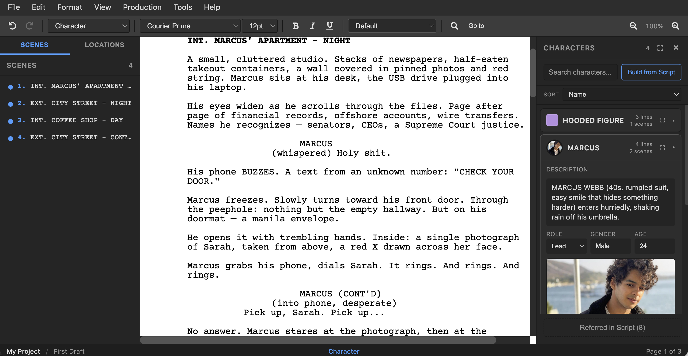

Characters
Build rich character profiles with images, backstories, and dialogue stats.
Opening the Characters Panel
Open the Characters panel from View > Characters. It appears as a side panel alongside the editor.

The panel automatically detects every character in your screenplay — anyone who has a Character element (i.e., anyone who speaks) appears in the list. Characters with images show a circular avatar in the collapsed view.
Character Statistics
Each character entry shows helpful statistics:
- Dialogue count — How many lines of dialogue this character has.
- Scene appearances — How many scenes the character appears in (as a speaker).
- First appearance — Which scene the character first speaks in.
- Scene list — A list of all scenes where the character appears.
Character Profiles
Click on a character name to expand their profile. Each profile includes a comprehensive set of fields inspired by Final Draft's Character Navigator:
| Field | Type | Description |
|---|---|---|
| Description | Rich text | Character bio — supports bold, italic, underline, and bullet lists. Exported as plain text to Final Draft (.fdx). |
| Role | Dropdown | The character's role: Lead, Supporting, Featured, Background, or Day Player. |
| Gender | Text | The character's gender (e.g., Male, Female, Non-binary). |
| Age | Text | The character's age or age range (e.g., 30s, 45). |
| Backstory | Rich text | Character history, motivations, secrets — rich text with the same formatting options as Description. |
| Highlight color | Color picker | A color used to visually highlight this character's dialogue in the editor. |
Rich Text Editing
The Description and Backstory fields use a mini rich text editor with a formatting toolbar:
- B — Bold
- I — Italic
- U — Underline
- • — Bullet list
This lets you structure character information clearly — for example, using bold for key traits, bullet lists for goals or relationships, and italic for quotes.
FDX compatibility: When you export to Final Draft (.fdx), the Description field is automatically converted to plain text (HTML formatting is stripped). The Backstory, Role, and other extended fields are preserved in OpenDraft's native format but are not included in FDX exports, since Final Draft's format does not support them.
Character Images
You can associate one or more images with each character — headshots, costume references, mood boards, or any visual reference.
Adding Images
In the expanded character profile, you'll see two buttons:
- Upload Image — Upload a new image file from your computer. It's automatically added to the project's assets and tagged with the character's name.
- From Assets — Opens a picker showing all image assets already in your project. Click one to associate it with the character.
Viewing Images
- The first image (primary) is shown large at the top of the expanded profile and as a circular avatar in the collapsed character row.
- If there are multiple images, a thumbnail strip appears below the primary image. Click any thumbnail to view it full-size in a lightbox.
Managing Images
Hover over a thumbnail to reveal action buttons:
- ★ (star) — Set this image as the primary image (shown as avatar and first in the profile).
- × (remove) — Remove this image from the character. The image remains in project assets — only the association is removed.
Build from Script
The Build from Script feature automatically extracts character information from your screenplay's action lines:
- Click the Build from Script button in the Characters panel.
- OpenDraft scans your action lines for character introductions (e.g., "SARAH (30s, sharp eyes, messy bun) waits in line").
- It automatically populates the character's description and age fields from the introduction text.
Tip: Follow the screenwriting convention of writing character names in ALL CAPS on first appearance in an action line (e.g., "SARAH enters the room"). This helps OpenDraft's Build from Script find and extract character introductions.
Character Highlighting
Each character can be assigned a highlight color. When character highlighting is enabled (via Tools > Character Highlighter), each character's dialogue is tinted with their assigned color in the editor. This makes it easy to visually scan who's speaking at a glance.
Colors are automatically assigned from a 12-color palette when characters are first detected. You can change any character's color in their expanded profile.
Sorting Characters
Sort the character list by:
- Name — Alphabetical order
- Importance — By number of dialogue lines (most dialogue first)
- Scenes — By number of scene appearances
- Dialogues — By dialogue count
- Appearance — Order of first appearance in the script
Referred Characters
The Show Referred toggle displays characters who are mentioned in action lines but never speak. This helps you track all characters in your story, not just those with dialogue.
Searching Characters
Use the search field at the top of the Characters panel to filter the list by name. This is helpful in scripts with large casts.